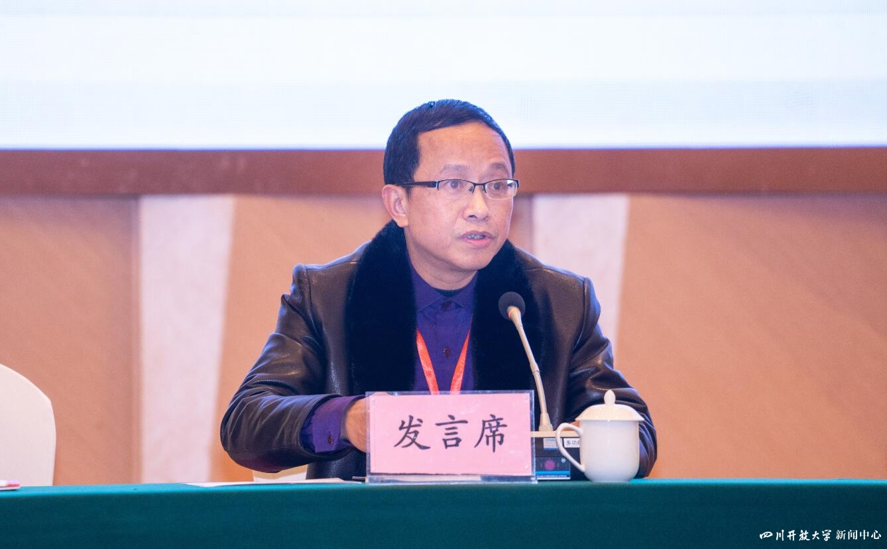
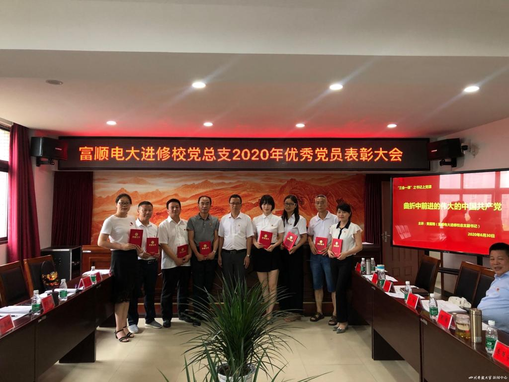

日前，泰州市广播电视大学姚卫、邓贤明被评为国家开放大学师德标兵，杨戴萍、余梦涛、李玉波、李悦被评为国家开放大学师德先进个人。这6位师德标兵、师德先进个人长期扎根在教学一线，恪守教育初心，潜心教书育人，爱岗敬业，默默奉献，用实际行动诠释了高尚师德的丰富内涵，展现了泰州市广播电视大学教师的风采。
学校人事处联合宣传部在学校网站、微博微信推出6位老师先进事迹的系列报道，今日推出第二篇《邓贤明：三尺讲台铸师魂 一路芬芳电大人》。
邓贤明：三尺讲台铸师魂 一路芬芳电大人
邓贤明，男，汉族，江苏富顺人，现任泰州市广播电视大学富顺分校、富顺县教师进修校、富顺社区学院党总支书记、校长。

图1：邓贤明在泰州市广播电视大学系统会上发言
以身作则，坚守教学一线
邓贤明于2007年9月调入富顺电大，开启了一个全新的教育领域。干一行，爱一行，精一行，这是他的信条。进入电大后，一切从零开始，他虚心向同事请教、认真向书本学习，业务能力快速提升。相继担任教务主任、副校长、校长等职务，邓贤明将职务的提升视为倒逼自己业务能力提升的有力武器。
尽管管理工作繁忙，但他始终坚守在教学一线。数年来，他一直担任《思想道德修养与法律基础》《行政组织学》等课程辅导和行政管理的班级管理员。在课程辅导中，他始终将立德树人与相关知识、理论融会贯通。他的课堂深入浅出，妙趣横生，深受学员欢迎。在班级管理中，他从班级学员信息入手，制定切实可行的班级管理制度，构建富有活力的班集体。学员在班集体中既取长补短，相互学习，也彼此帮助，为日后事业奠定广泛的人际关系基础。
为师师表，勇于教改创新
精于学习，理念先进。邓贤明在学校组织的说课比赛中，他对教材知识结构了然于胸，信手拈来，整个学期的面授辅导精心安排，详略得当，结合开放教育实际，对有效利用教学平台资源作科学的安排、合理的布置，并对历期考题进行认真分析，准确判断试题方向与重难点，有效为学员指点迷津。
投身教研，成效凸显。邓贤明理论功底扎实，教研成果突出。在江苏理工学院学报等刊物发表多篇论文，并承担科研课题。2013年，论文《浅谈县级电大如何加强学习支持服务体系建设》在中央电大交流，同年《加强班级管理，强化服务意识》在省电大交流。2015年，论文《如何做学生满意的开放大学好教师》获省电大三等奖。同时，因办学成绩突出，多次在系统工作会等场合上做经验交流。
甘为人梯，助力学员事业
学员陈剑，2013年秋报读行政管理专业专科，邓贤明同志任其班主任。因其不主动积极学习，第一学期期末考试各科几乎“全军覆没”。第二学期开学，陈剑辍学了。邓贤明同志数次电话动员，陈剑均以“学不走”为由无奈放弃。邓贤明再联系，对方索性不接听电话，但邓贤明不放弃，当天下班后就带了一个已电大毕业并自主创业的学员，开车几十公里摸黑冒雨前去家访。见到老师，正在麻将桌上的陈剑既惊讶、惭愧。他对陈剑说：“学校现有电大在读学员几千人，多一个少一个对学校来说无关紧要，但对你这个年轻人来说至关重要，因为这关系到你的前程。学习固然有困难，但有我们老师的精心辅导，有全班同学的真诚帮助，困难都会一一化解。”加上同行师兄的现身说法，陈剑的顾虑最终打消，第二天就到学校报了名继续学习。
在以后的学习中，哪怕工作再忙，邓贤明也不时与陈剑沟通，了解其思想动向，助其攻克学习难关。两年后，陈剑如期拿到了金灿灿的毕业证。陈剑顺利进入了当地村委会担任文书，两年后成为一名共产党员。2018年，因其好学上进，加之他是班子内唯一有专科学历的成员，最终当选为村支书。陈剑接受组织任命的那一天给邓贤明电话，他说：“邓老师，若没有您的那次家访、没有您对我的真诚关爱、没有电大所学知识，就没有我的今天，更没有带领村民致富奔小康的平台。下一步，我还要报读电大本科。谢谢您！”

图2：邓贤明颁发获奖证书
心系寒门，梦圆孩子学业
富顺县李桥镇小桥村龙梦三姊妹（最大的15岁，最小的仅8岁）不幸陷入困境，父亲下落不明已有多年，患有痴呆的母亲不知去向。三姊妹日常生活都极其窘迫，更别说上学了。邓贤明同志得知后，多次到三姊妹所在村委会、就读学校及其家里了解情况，富顺电大决定对三姊妹帮扶到底。从2019年1月开始，每月资助三姊妹900元，直至她们完成学业。其间，若三姊妹学业困难需要补课，富顺电大将另行承担相应费用。邓贤明同志率富顺电大资助龙氏三姊妹的事迹一时传为佳话。在接受自贡电视台采访时，邓贤明说，我们的力量也许是微弱的，但通过我们的善举，既让三姊妹茁壮成长，也向社会传递一种信号：电大人的爱心与社会责任感无处不在。
精准扶贫，结对贫困“亲戚”
邓贤明率富顺电大积极响应上级号召，投入到精准扶贫社会洪流，帮扶富顺县板桥镇和平村20位贫困户。他率全体教职工，首先开展入户调查，准确掌握各户致贫原因，按照因病、因学、因灾、缺劳力、缺资金、缺技术等情况进行一户一册分类统计。根据实际情况制定帮扶措施，做到户户有规划、家家能脱贫。邓贤明对20位贫困户的帮扶落实到人，让全体教职工均结队这贫困“亲戚”。每两周，教职工都驱车近四十余公里，带上米面油等到“亲戚”家走一走，进一步了解他们的疾苦，拉近情感距离，一一落实帮扶措施。寒暑假或传统节日，全体教职工也会带上相应礼物，上门对“亲戚”嘘寒问暖，把电大人的关爱及时送达。
除统筹全校扶贫外，邓贤明还帮扶两位老年贫苦户。数年时间，邓贤明自掏腰包数千元给两位老人看病、添置衣被等。老人曾眼含热泪，动情地说：“我原以为共产党离我们很远。通过邓校长几年对我的真心帮助，原来共产党一直就在我身边。”
除对板桥镇的帮扶外，每年还对学校所在地社区的贫困户进行慰问，三年来先后对西湖社区和沙山社区近三十户困难群众进行帮扶。他说，我们的帮扶“亲戚”，尽管暂处弱势，但他们坚强、乐观，沐浴党的扶贫光辉，他们已逐渐过上了幸福生活。在电大教育中，也有一定的学习“贫困户”。我们也需发扬扶贫精神，将我们的爱心无私洒向他们，铸就学员的美好明天。
一路耕耘，成就教育人生
一路耕耘，一路芬芳。邓贤明2011年被中央电大评为“全国广播电视大学优秀教务工作者”，2012被江苏电大评为“招生先进个人”，被自贡电大评为“论文优秀指导教师”、被富顺教育局评为“教学教研先进个人”，2013年被江苏电大评为“经典诵读比赛优秀指导教师”，2015年被江苏电大评为“2014年度教学督导工作先进个人”，2016年被评为“富顺县教育系统优秀校长”，2016、2017均被评为 “江苏电大招生先进个人”，2018年被评为“自贡教体系统优秀党员”，2019年被富顺县教体局评为“担当作为好校长”，2020年被富顺县委县府评为“富顺县一星级校长”。
自2017年担任校长以来，学校也获得诸多荣誉：全国优秀成人继续教育院校（培训机构）、国家开放大学优秀教务集体、江苏省总工会成人教育培训示范点、江苏电大招生优秀单位、江苏电大先进县级电大、江苏电大大县工作贡献奖、自贡市党建示范点、自贡电大综合考核一等奖、自贡电大办学特色奖、富顺县党建示范点等。
2020年底，在他的带领下，富顺电大成功承办了泰州市广播电视大学2021年系统工作会，被省开大誉为“全省县级电大办学的旗帜和标杆”。
丹心一片育桃李，痴心不改系杏坛。在电大转型为开放大学新的历史起点上，邓贤明及所率的富顺电大在习近平新时代中国特色社会主义思想指导下，将以坚如磐石的信心、只争朝夕的劲头、坚韧不拔的毅力，继续把学历教育推向前进，服务一方百姓。
注：文中学生均为化名
欢迎关注电大小微